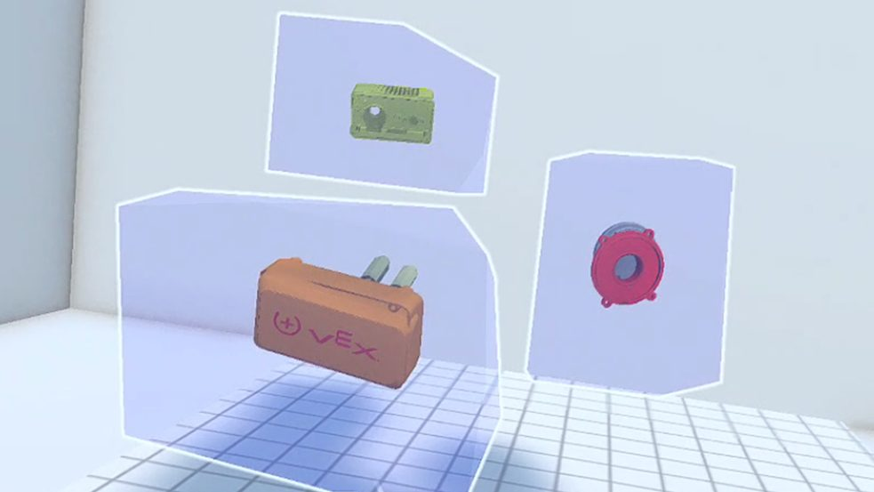

Virtual Reality Task Guidance Through Relative 6DoF Pose Specification
IEEE International Symposium on Mixed and Augmented Reality Adjunct (ISMAR-Adjunct), 2025.

Abstract
Virtual reality (VR) systems for guiding remote physical tasks typically require object poses to be specified in absolute world coordinates. However, many of these tasks only need object poses to be specified relative to each other. Thus, supporting only absolute pose specification can create inefficiencies in giving or following task guidance when unnecessary constraints are imposed. We are developing a VR task-guidance system that avoids this by enabling relative 6DoF poses to be specified within subsets of objects. We describe our user interface, including how geometric relationships are specified and several ways in which they are visualized, and our plans for validating our approach against existing techniques.
Cite
B. Yang, X. He, C. Zou, J.-S. Liu, B. Tversky, and S. Feiner, “Virtual Reality Task Guidance Through Relative 6DoF Pose Specification,” in Proc. IEEE International Symposium on Mixed and Augmented Reality Adjunct (ISMAR-Adjunct), 2025, pp. 901–902, doi: 10.1109/ISMAR-Adjunct68609.2025.00247.
@inproceedings{yang2025taskguidance,
title={Virtual Reality Task Guidance Through Relative 6DoF Pose Specification},
author={Yang, Ben and He, Xichen and Zou, Charlie and Liu, Jen-Shuo and Tversky, Barbara and Feiner, Steven},
booktitle={2025 IEEE International Symposium on Mixed and Augmented Reality Adjunct (ISMAR-Adjunct)},
pages={901--902},
year={2025},
doi={10.1109/ISMAR-Adjunct68609.2025.00247}
}